YouTube Studio에서 AI가 영상 속 제품을 찾아내고, 제휴 링크와 함께
자동으로 태그해 수익을 만드는 방법을 설치부터 끝까지 안내합니다.
설치처Chrome Web Store
대상MCN 에이전시 · 소속 크리에이터
동작 위치YouTube Studio 동영상 세부정보
확장 버전v1.2.79 · 2026-08-04
이 문서에 대하여
본문은 한국어로 작성된 번역용 원고이며, 화면 이미지는 실제 미국 사용자가 보게 되는
영문 UI 기준입니다. 본문에서 버튼·항목 이름은 화면에 보이는 영문 그대로 표기하고
뜻을 함께 적었습니다. 이미지 속 수치와 상품은 설명을 위한 예시입니다.
목차
0~3장은 모든 크리에이터 공통이고, 4장과 5장은 채널 구독자 수에 따라 둘 중 하나만 읽으면 됩니다.
0AEDI-V는 무엇을 하나요전체 흐름 · 두 가지 수익화 방식
1설치와 가입확장 설치 · 구글 로그인
2시작 전 영상 조건 4가지이것부터 맞춰야 분석이 시작됩니다
3AEDI-V 패널 살펴보기크레딧 · 요금제 · 메뉴 구성
4구독자 500명 이상 — 제품 태그YouTube Shopping 제휴가 활성화된 채널
5구독자 500명 미만 — 설명란 링크Amazon Associates를 사용하는 채널
6크레딧과 요금제차감 기준 · 부족 알림 · 추가 크레딧
7품절품절 알림 · 무료 교체 방법
8알아두면 좋은 기능분석 결과 재사용 · 쇼츠 · 진행 상황
9자주 묻는 질문문제가 생겼을 때 확인 순서
0
AEDI-V는 무엇을 하나요
먼저 이 확장 프로그램이 어떤 일을 대신해 주는지, 전체 흐름이 어떻게 되는지 확인합니다.
AEDI-V는 YouTube Studio에서 동작하는 크롬 확장 프로그램입니다.
크리에이터가 올린 영상을 AI가 분석해 영상 속에 등장한 제품을 찾아내고,
그 제품의 제휴 링크를 영상에 자동으로 붙여 줍니다.
시청자가 그 링크로 구매하면 크리에이터에게 수수료 수익이 발생합니다.
기존에는 크리에이터가 제품을 하나하나 검색해서 직접 태그해야 했습니다.
AEDI-V는 검색과 태그 등록을 자동화해 그 시간을 없애는 것이 핵심입니다.
전체 과정은 다섯 단계이며, 크리에이터가 직접 하는 일은 ④ 제품 고르기 하나뿐입니다.
1확장 설치 · 로그인
›
2영상 선택
›
3AI 분석 (자동)
›
4제품 고르기
›
5적용 (자동)
두 가지 수익화 방식 — 내 채널은 어느 쪽인가요?
채널 상황에 따라 제휴 링크를 붙이는 방법이 두 가지로 나뉩니다.
어느 쪽인지는 AEDI-V가 자동으로 판별하므로 직접 고를 필요는 없습니다.
다만 화면과 결과물이 다르므로, 담당 크리에이터가 어느 쪽인지 미리 알아두면 안내하기 편합니다.
500명 이상 제품 태그
YouTube Shopping 제휴 프로그램이 이미 활성화된 채널
영상에 YouTube 제품 태그가 직접 등록됩니다
영상 특정 구간에만 제품을 노출할 수 있습니다 (타임스탬프)
시청자가 영상 위에서 바로 제품을 봅니다
결과: 영상 설명란 아래 제품 태그
500명 미만 설명란 링크
YouTube Shopping을 아직 쓸 수 없어 Amazon Associates로 수익화하는 채널
영상 설명란(Description)에 제품명과 링크가 삽입됩니다
타임스탬프 구간 지정은 지원하지 않습니다
시작 전 Amazon Associates ID 입력이 필요합니다
결과: AI-recommended product list ▼
i
YouTube Shopping 제휴 프로그램은 언제 열리나요
화면 안내 문구 기준 구독자 500명 이상부터 신청할 수 있습니다.
활성화되면 AEDI-V가 자동으로 제품 태그 방식으로 전환됩니다.
그때까지는 설명란 링크로 수익화하면 됩니다.
1
설치와 가입
한 번만 하면 되는 과정입니다. 5분이면 끝납니다.
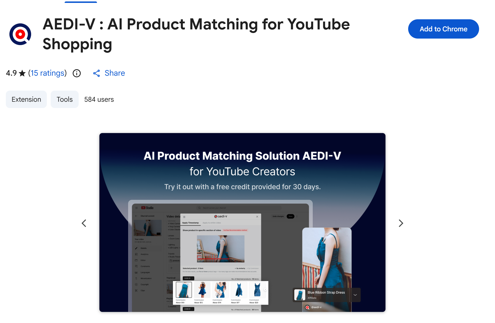
Chrome 웹스토어의 AEDI-V 페이지 · 오른쪽 위 파란색 Add to Chrome 버튼으로 설치합니다
STEP처음 시작하기
아래 순서대로 진행하면 바로 사용할 수 있는 상태가 됩니다.
1
Chrome 웹스토어에서 확장 프로그램 설치
아래 주소로 접속해 Add to Chrome(Chrome에 추가) 버튼을 누릅니다.
확인 창이 뜨면 Add extension(확장 프로그램 추가)를 누릅니다.
설치가 끝나면 Google 로그인 창이 열립니다.
반드시 해당 YouTube 채널을 운영하는 계정으로 로그인해야 합니다.
로그인에 성공하면 YouTube Studio의 콘텐츠 목록으로 자동 이동합니다.
i
여기까지가 공통입니다
설치와 로그인이 끝나면 채널 구독자 수에 따라 다음 화면이 달라집니다.500명 이상은 4장, 500명 미만은 5장으로 이어서 보세요.
약관 동의와 Amazon Associates ID 입력은 각 장의 처음 시작 화면에서 설명합니다.
2
시작 전 영상 조건 4가지
가장 문의가 많은 부분입니다. 이 네 가지가 모두 맞아야 AI 분석이 시작됩니다.
영상 세부정보 페이지에 들어갔는데 AEDI-V 패널 대신 안내 팝업이 뜬다면,
아래 조건 중 하나 이상이 맞지 않은 것입니다.
조건
YouTube Studio에서 확인할 위치
맞춰야 하는 상태
저장 Save
페이지 오른쪽 위 Save 버튼
저장하지 않은 변경사항이 없어야 합니다. 버튼이 활성화되어 있으면 먼저 저장하세요.
공개 상태 Visibility
Visibility 항목
Public 또는 Unlisted여야 합니다. Private은 불가합니다.
퍼가기 허용 Allow embedding
세부정보 하단 Show more → Allow embedding
체크되어 있어야 합니다. AI가 영상을 읽어오는 데 필요합니다.
연령 제한 Age restriction
세부정보 하단 Age restriction
성인 제한이 해제되어 있어야 합니다.
!
이 팝업이 뜨면 위 4가지를 확인하세요Please try again after saving, making the video public, allowing embedding, or lifting the adult restriction 저장, 영상 공개, 퍼가기 허용 또는 성인 제한 해제 후 다시 시도해 주세요.
✓
실무 팁네 가지 중 Allow embedding이 가장 자주 걸립니다.
기본값이 켜져 있지만 일부 채널은 일괄 설정으로 꺼둔 경우가 있습니다.
크리에이터 온보딩 시 이 항목부터 확인하도록 안내해 주세요.
3
AEDI-V 패널 살펴보기
조건이 모두 맞으면 화면 오른쪽에 AEDI-V 패널이 자동으로 나타납니다.
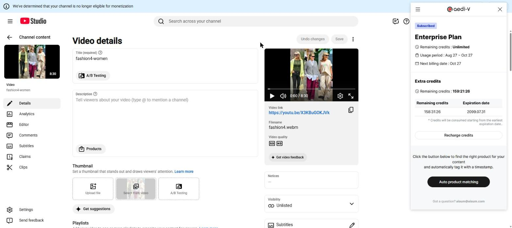
영상 세부정보 페이지 오른쪽에 나타나는 AEDI-V 패널 ·
맨 아래 검은 Auto product matching 버튼이 분석 시작 버튼입니다
패널에 표시되는 항목
항목
의미
Subscribed / 요금제 이름 구독 중 · 플랜
현재 이용 중인 요금제입니다. 무료 체험 중에는 Try it for free and then subscribe.로 표시됩니다.
Remaining credits 남은 크레딧
이번 달에 분석할 수 있는 영상 길이의 총합입니다. 분·초로 표시됩니다.
Usage period / Expiration date 사용 기간 · 만료일
현재 크레딧을 쓸 수 있는 기간입니다.
Next billing date 다음 결제일
다음 자동 결제가 이루어지는 날짜입니다.
Extra credits 추가 크레딧
별도로 충전한 크레딧입니다. 기본 크레딧과 따로 표시되며 유효기간이 있습니다. (6장 참고)
Auto product matching 제품 자동 매칭
누르면 AI 분석이 시작됩니다. 이 시점에 크레딧이 차감됩니다.
왼쪽 위 메뉴 ☰
패널 왼쪽 위 햄버거 아이콘을 누르면 아래 메뉴가 열립니다.
메뉴
하는 일
My Account내 계정
구독 정보 페이지로 이동합니다. 구독 상태 확인, 플랜 변경, 결제 카드 변경, 구독 해지, 회원 탈퇴를 여기서 처리합니다.
Payment결제
요금제 목록과 추가 크레딧 충전 화면입니다.
Product tag history제품 태그 내역
지금까지 태그한 제품 내역을 확인합니다.
Event이벤트
진행 중인 이벤트 페이지입니다.
Tutorial튜토리얼
확장 안에 내장된 사용법 안내를 다시 봅니다. 500명 이상은 6장, 500명 미만은 5장으로 구성됩니다.
QnA문의하기
채팅 상담 창이 열립니다.
Amazon Associates ID500명 미만만
등록한 제휴 ID를 확인하고 변경합니다.
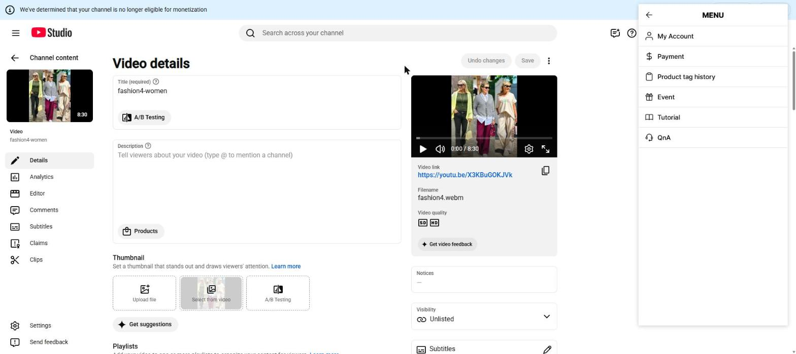
왼쪽 위 ☰를 누르면 나타나는 MENU ·
왼쪽 위 ← 화살표로 패널로 돌아옵니다
i
문의 연락처패널 맨 아래에 Got a question? aisum@aisum.com이 항상 표시됩니다.
4
구독자 500명 이상 — 제품 태그 YouTube Shopping
YouTube Shopping 제휴가 활성화된 채널의 사용법입니다. 해당하지 않으면 5장으로 넘어가세요.
처음 시작 화면 — 분석 약관에 동의
로그인 후 영상 세부정보 페이지에 처음 들어가면 패널 위에 동의 안내가 겹쳐 나타납니다.
Confirm(확인)을 누르면 바로 사용할 수 있습니다.
Amazon Associates ID 입력란은 나타나지 않습니다.
YouTube video analysis— 유튜브 동영상 분석
Shorts video analysis— 쇼츠 동영상 분석
태그할 영상 선택
YouTube Studio의 콘텐츠 목록에 안내 문구
Click on a video to tag products…가 나타납니다.
제품을 태그할 공개된 영상을 클릭해 세부정보 페이지로 들어갑니다.
STEP A제품을 영상에 태그하기
분석 시작부터 저장까지 6단계입니다.
1
Auto product matching 클릭
패널 아래 검은 버튼을 누르면 AI 영상 분석이 시작됩니다. 이때 크레딧이 차감됩니다.
2
분석이 끝날 때까지 기다리기
Analyzing AI video 창에 진행률이 표시됩니다.
이 창을 닫거나 다른 페이지로 이동해도 분석은 계속됩니다.
진행률은 브라우저 오른쪽 위 AEDI-V 아이콘에서 다시 확인할 수 있고,
완료되면 바탕화면 알림으로 알려줍니다.
3
노출 방식 선택 — 탭 두 개
Apply Timestamp(타임스탬프 적용) — 영상의 특정 구간에만 제품을 노출합니다. YouTube가 권장하는 방식입니다.
Apply to entire video(동영상 전체 적용) — 영상 전체 구간에 제품을 노출합니다.
4
제품 선택
제품 카드를 클릭하면 선택됩니다. 다시 누르면 해제됩니다.
카드마다 Commission 예상 수수료가 표시되며,
By similarity(유사도 순) /
By Commission(커미션 순)으로 정렬을 바꿀 수 있습니다.
5
Apply(적용하기) 클릭
선택을 마치면 아래 Apply 버튼을 누릅니다.
AEDI-V가 YouTube 제품 검색과 태그 등록을 자동으로 처리합니다.
6
결과 확인
세부정보 페이지의 설명란 아래 제품 영역에 등록된 제품 개수와
제품 썸네일이 표시됩니다.
!
제품은 5개 내외가 가장 효과적입니다
최대 15개까지 선택할 수 있지만, 화면에도
For the best results, use five or fewer product tags라고 안내됩니다.
태그가 많아질수록 추천 정확도와 전환율이 떨어집니다.
크리에이터에게 “많이 거는 것보다 잘 맞는 것 몇 개”를 강조해 주세요.
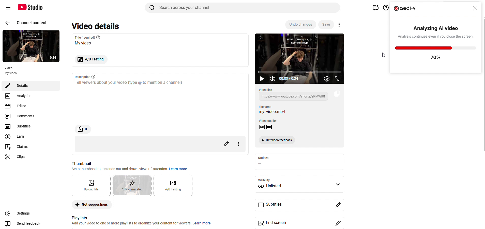
2단계 · Analyzing AI video · 진행률(%)이 표시됩니다 ·
Analysis continues even if you close the screen — 창을 닫아도 분석은 계속됩니다
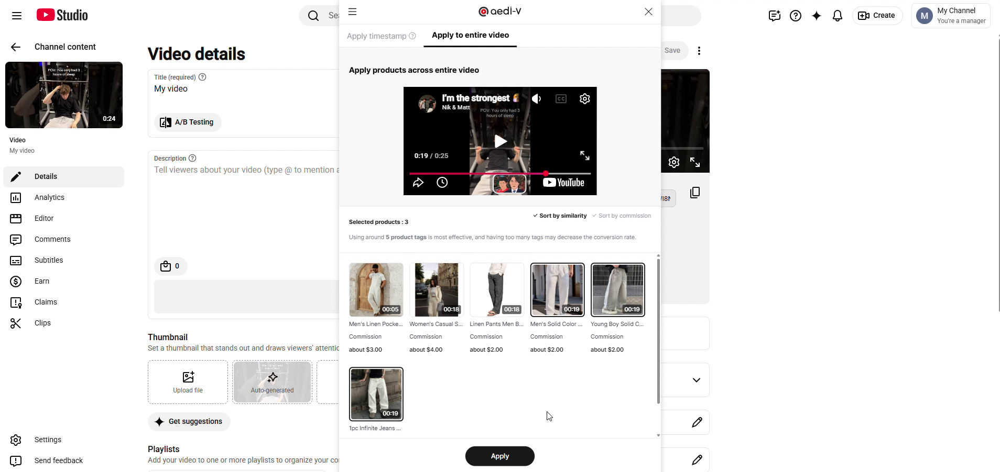
3~4단계 · Apply to entire video 탭 · 구간 구분 없이 한 목록으로 표시됩니다 ·
제품마다 Commission 예상 수익이, 위에는 Selected products로 고른 개수가 표시됩니다
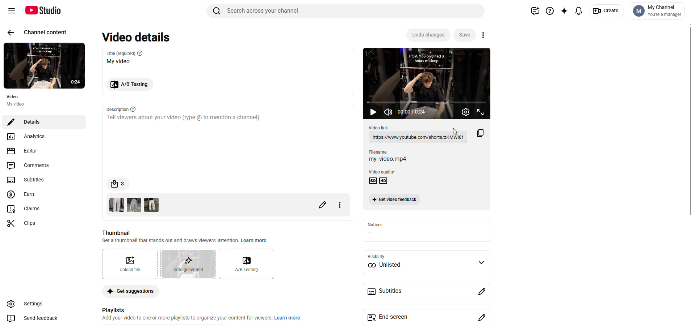
6단계 · 태그 완료 · 설명란 아래 제품 개수와 태그된 제품 썸네일이 나란히 표시됩니다
5
구독자 500명 미만 — 설명란 링크 Amazon Associates
YouTube Shopping을 아직 사용할 수 없는 채널의 사용법입니다.
큰 흐름은 4장과 같습니다. 다른 점은 두 가지입니다 —
타임스탬프 구간 지정이 없고, 결과가 영상 설명란에 텍스트로 삽입됩니다.
처음 시작 화면 — 약관 동의와 Amazon Associates ID
로그인 후 영상 세부정보 페이지에 처음 들어가면 아래 시작 화면이 열립니다.
제품 태그를 쓸 수 없는 채널에만 나타나는 화면으로, 약관 동의와 제휴 ID 입력을 한 번에 처리합니다.
Amazon Associates 칸에 제휴 ID를 입력합니다.
ID는 Amazon Associates 페이지에서 확인할 수 있으며 -20으로 끝나는 형식입니다.
동의 항목 두 가지는 둘 다 필수입니다 —
YouTube video analysis(유튜브 동영상 분석),
Shorts video analysis(쇼츠 동영상 분석).
Agree to all(전체 동의)로 한 번에 체크됩니다.
마지막으로 Start(시작하기)를 누르면 준비가 끝납니다.
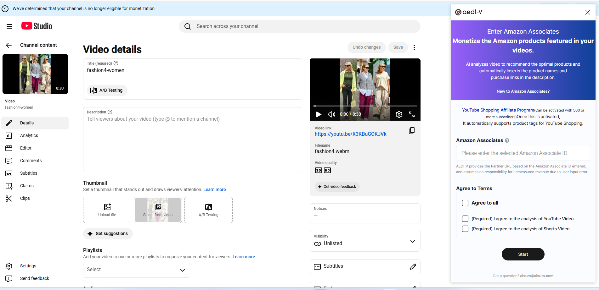
구독자 500명 미만 채널에서 처음 시작할 때 열리는 화면 ·
위쪽 안내에 Can be activated with 500 or more subscribers로 조건이 적혀 있습니다 ·
구독자가 늘어 제휴가 활성화되면 이 화면 대신 4장의 흐름으로 바뀝니다
!
Amazon Associates ID는 정확히 입력해 주세요
AEDI-V는 입력된 ID를 기준으로 제휴 URL을 생성합니다.
ID를 잘못 입력하면 수익이 집계되지 않으며, 이에 대해 회사는 책임지지 않습니다.
입력 후 담당자가 한 번 더 확인하도록 안내해 주세요.
ID는 나중에 메뉴에서 변경할 수 있습니다.
STEP B설명란에 제품 링크 넣기
분석 시작부터 삽입까지 5단계입니다.
1
Auto product matching 클릭
패널 아래 검은 버튼을 눌러 AI 분석을 시작합니다.
2
분석 대기
진행률이 표시됩니다. 창을 닫아도 분석은 계속되며 완료 시 알림이 옵니다.
3
AI Recommended Products에서 제품 선택
AI가 추천한 제품 목록이 하나의 그리드로 표시됩니다.
카드를 클릭해 선택하고, 정렬은 유사도 순 / 커미션 순으로 바꿀 수 있습니다.
여기서도 5개 내외를 권장합니다.
4
Apply 클릭
선택을 마치고 아래 Apply 버튼을 누르면
영상 설명란에 자동으로 삽입됩니다.
5
설명란 확인 후 저장
설명란 맨 아래에 AI-recommended product list ▼ 제목과 함께
제품명 + 구매 링크가 들어갑니다.
내용을 확인한 뒤 오른쪽 위 Save 버튼으로 저장합니다.
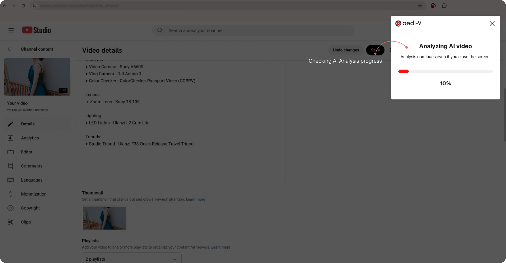
2단계 · 분석 진행률 표시 · 창을 닫아도 분석은 계속됩니다
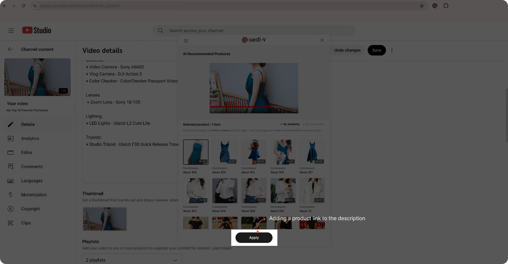
3~4단계 · AI Recommended Products · 구간 구분 없이 한 목록으로 표시되며,
아래 Apply를 누르면 설명란에 링크가 추가됩니다
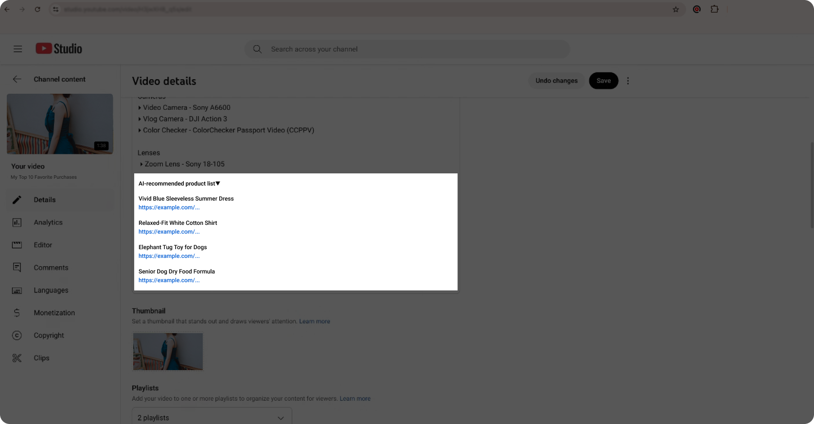
5단계 · 설명란에 삽입된 결과 · AI-recommended product list ▼ 아래로 제품명과 링크가 나열됩니다
!
저장 후 이 안내가 뜨면To make external links clickable, first complete a one-time verification 외부 링크를 클릭할 수 있게 하려면 우선 일회성 인증을 완료하세요.
YouTube 정책상 채널에서 외부 링크 인증을 한 번 완료해야 시청자가 링크를 누를 수 있습니다.
인증 전에는 링크가 텍스트로만 보입니다. 크리에이터에게 이 인증을 먼저 끝내도록 안내해 주세요.
✓
설명란 원본은 지워지지 않습니다
기존 설명 글 아래에 추가되는 방식이므로 크리에이터가 써둔 내용은 그대로 유지됩니다.
6
크레딧과 요금제
정산·CS 문의가 가장 많은 영역입니다. 기준을 정확히 알아두세요.
크레딧이란
크레딧은 분석할 수 있는 영상 길이입니다. 분·초 단위로 표시되며,
10분짜리 영상을 분석하면 크레딧 10분이 소모되는 방식입니다.
따라서 남은 크레딧이 영상 길이보다 짧으면 분석을 시작할 수 없습니다.
!
크레딧이 영상 길이보다 부족할 때
패널에 Not enough credits와 함께 얼마나 모자란지가 표시되고
분석 버튼이 비활성화됩니다. 크레딧을 충전하거나 상위 요금제로 변경해야 합니다.
부족 알림 기준
아래 기준에 걸리면 해당 수치가 빨간색으로 바뀌고 구독·충전 버튼이 강조됩니다.
항목
경고 기준
화면 변화
Remaining credits남은 크레딧
5분 00초 이하
크레딧 숫자가 빨간색으로 표시됩니다
Usage period사용 기간
3일 이하
만료일이 빨간색으로 표시됩니다
크레딧이 차감되는 경우 / 되지 않는 경우
상황
크레딧
정상적으로 분석이 완료된 경우
차감됩니다
매칭된 제품이 하나도 없는 경우 (No products matched)
차감되지 않습니다
분석에 실패한 경우 (No result data)
차감되지 않습니다
이미 분석한 영상을 다시 여는 경우
차감되지 않습니다
적용하지 않고 닫았다가 나중에 다시 태그하는 경우
차감되지 않습니다
품절 제품을 다른 제품으로 교체하는 경우
차감되지 않습니다
✓
한 번 분석하면 계속 재사용할 수 있습니다
크레딧은 영상 1건을 처음 분석할 때 한 번만 소모됩니다.
이후 같은 영상에서 제품을 바꾸거나 추가하는 작업은 모두 무료입니다.
크리에이터가 “태그를 잘못 걸면 크레딧이 또 나가나요?”라고 물으면 아니오가 정답입니다.
요금제 메뉴 › Payment
메뉴의 Payment에서 요금제를 고르고 결제합니다.
아래는 2026년 8월 기준 미국 요금제이며 모두 세금 별도입니다.
포함 크레딧은 한 달에 분석할 수 있는 영상 길이의 총합입니다.
요금제
월 요금
포함 크레딧
Starter
$9.80
30:0030분
Standard
$17.80
1:00:001시간
Pro
$32.00
2:00:002시간
Studio
$99.00
7:00:007시간
Studio+
$230.00
18:00:0018시간
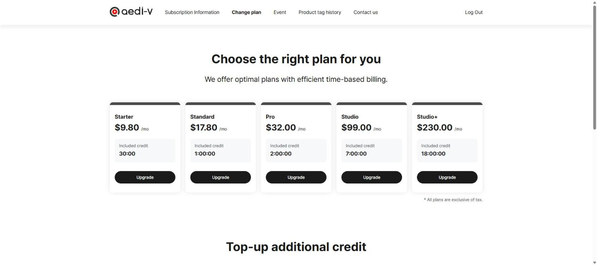
메뉴 › Payment · 요금제마다 Upgrade 버튼으로 변경합니다 ·
All plans are exclusive of tax — 표시 금액은 세금 별도입니다
추가 크레딧 Extra credits
구독 중인 사용자만 충전할 수 있습니다. 무료 체험 중에는 충전이 불가합니다.
같은 Payment 화면 아래쪽 Top-up additional credit에서 충전합니다.
5분 단위로 $2.00이며 − / +로 분량을 조절합니다. 여기도 세금 별도입니다.
유효기간은 충전일로부터 3개월입니다.
여러 번 충전하면 유효기간이 가까운 것부터 먼저 소진됩니다.
패널에 남은 크레딧과 만료일이 목록으로 표시됩니다.
기본 크레딧과 합산되어 분석 가능 여부를 판단합니다.
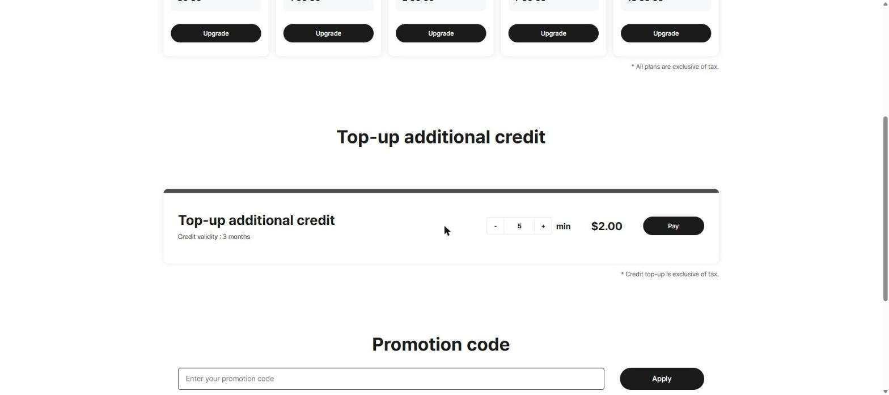
Top-up additional credit · Credit validity : 3 months로 유효기간이 함께 표시됩니다 ·
아래 Promotion code 칸에 프로모션 코드를 넣고 Apply를 누르면 적용됩니다
구독 관리 메뉴 › My Account
작업
동작 방식
요금제 변경
결제 페이지에서 변경합니다. 다음 결제일부터 적용되며, 그때까지는 현재 요금제가 유지됩니다.
결제 카드 변경
결제 대행사(Stripe) 창이 열립니다. 다음 결제부터 적용됩니다.
구독 해지
즉시 중단이 아니라 다음 결제일에 해지됩니다. 남은 기간은 그대로 사용할 수 있습니다.
해지 취소
해지 예정 상태에서 되돌릴 수 있습니다. 구독 정보 화면에 해지 예정 안내와 함께 취소 버튼이 표시됩니다.
회원 탈퇴
안내 확인 → 사유 선택 → 동의 체크 후 진행합니다. 구독 중이라면 즉시 탈퇴되지 않고, 자동 해지가 예약된 뒤 구독 만료 시점에 탈퇴 처리됩니다.
i
해지 예정 상태에서는 일부 버튼이 잠깁니다
구독 해지를 신청한 뒤에는 요금제 변경과 결제 카드 변경 버튼이 비활성화됩니다.
다시 바꾸려면 먼저 해지를 취소해야 합니다.
!
요금제 표는 안내용 참고 자료입니다
플랜 구성과 가격은 지역·시점에 따라 달라집니다. 위 표는 2026년 8월 미국 기준이며,
실제 안내와 결제는 메뉴 › Payment 화면의 최신 정보를 기준으로 해주세요.
환불 조건은 계약에 따라 다르므로 담당자에게 확인이 필요합니다.
7
품절
태그한 제품이 팔려 나가면 링크는 남고 수익만 사라집니다. 그래서 따로 다룹니다.
품절 제품 알림
태그해 둔 제품이 품절되면 자동으로 알림이 표시됩니다. 하루 한 번 확인합니다.
The product you tagged is out of stock.— 태그하신 제품이 품절되었습니다
You can change the product tag without using up credits.— 크레딧 소진 없이 교체 가능합니다
버튼: Replace Product— 제품 교체하기
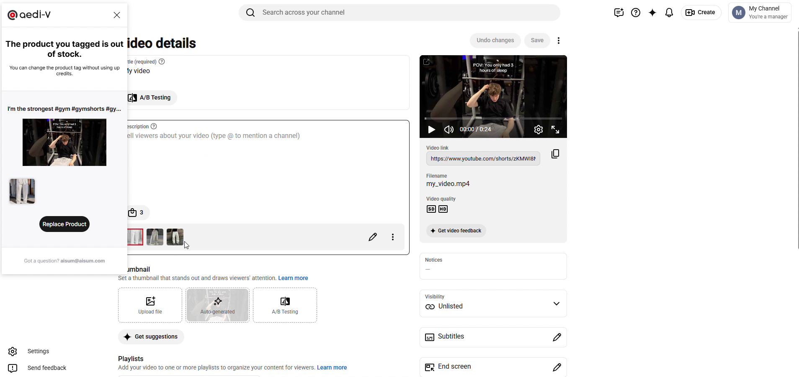
품절 알림 · 어떤 영상의 어떤 제품이 품절인지 영상 제목과 제품 이미지로 함께 보여줍니다 ·
아래 Replace Product를 누르면 제품 목록이 열려 다른 제품으로 바꿀 수 있습니다 ·
설명란 아래 태그 목록에서도 품절 제품이 빨간 테두리로 표시됩니다
교체하는 방법
알림의 Replace Product를 누릅니다.
처음 태그할 때와 같은 제품 목록이 열립니다. 대신 넣을 제품을 고릅니다.
Apply(적용하기)를 누르면 교체가 끝납니다.
✓
수익 누수를 막는 기능입니다
품절된 제품 링크는 클릭돼도 수익이 발생하지 않습니다.
이 알림이 뜨면 가능한 빨리 교체하도록 안내해 주세요.
교체에는 크레딧이 들지 않습니다.
8
알아두면 좋은 기능
문의를 줄여 주는 기능들입니다. 온보딩 때 함께 안내하면 좋습니다.
이미 분석한 영상 다시 활용하기
한 번 분석한 영상의 세부정보 페이지에 다시 들어가면, 분석 버튼 대신 아래 안내가 표시됩니다.
This video has been analyzed— 분석이 완료된 영상입니다
Edit product tags without using up credits— 크레딧 소진 없이 제품 태그를 수정하세요
버튼: Retrieve previous matching results— 이전 매칭 결과 불러오기
이 버튼을 누르면 크레딧 소모 없이 이전 분석 결과를 다시 불러와 제품을 교체하거나 추가할 수 있습니다.
분석 진행 상황 확인
분석 중에 YouTube Studio를 벗어나도 됩니다.
다른 웹사이트를 보고 있어도 진행 상황 팝업이 표시되며,
분석 완료된 영상과 분석 중인 영상의 개수를 확인할 수 있습니다.
완료되면 바탕화면 알림이 뜨고, 알림의 버튼을 누르면 해당 영상 편집 페이지로 바로 이동합니다.
쇼츠와 짧은 영상
i
1분 미만 영상과 Shorts는 타임스탬프를 쓸 수 없습니다
화면에도 Videos under 1 minute or Shorts cannot use timestamps.로 안내됩니다.
이 경우 Apply to entire video 탭으로 자동 전환되며, 타임스탬프 탭은 비활성화됩니다.
기능 오류가 아니라 정상 동작입니다.
제품 이미지가 보이지 않을 때
매칭 결과에서 제품 이미지가 비어 보인다면 광고 차단 확장 프로그램(AdBlock 등)이 원인입니다.
화면 안내는 If you can't see the image, please disable your ad blocker입니다.
해당 사이트에서 광고 차단을 꺼주세요.
9
자주 묻는 질문
문의가 들어왔을 때 이 순서대로 확인하면 대부분 해결됩니다.
이런 경우
이렇게 확인하세요
AEDI-V 패널이 나타나지 않습니다.
먼저 영상 세부정보(수정) 페이지가 맞는지 확인하세요. 목록 화면에서는 뜨지 않습니다.
페이지가 맞다면 2장의 영상 조건 4가지를 확인합니다. 그래도 안 되면 페이지를 새로고침하세요.
분석 버튼이 눌리지 않습니다.
남은 크레딧이 영상 길이보다 짧은 경우입니다. 패널에 부족한 시간이 표시됩니다.
크레딧을 충전하거나 요금제를 변경해 주세요. (6장)
분석했는데 제품이 하나도 안 나옵니다.
영상에서 식별 가능한 제품을 찾지 못한 경우입니다. 크레딧은 차감되지 않습니다.
제품이 화면에 뚜렷하게 보이는 영상일수록 매칭률이 높습니다.
타임스탬프 탭이 비활성화되어 있습니다.
영상이 1분 미만이거나 Shorts인 경우입니다. 정상 동작이며 전체 적용으로 진행하면 됩니다.
제품 이미지가 안 보입니다.
광고 차단 확장 프로그램을 꺼주세요.
설명란 링크를 눌러도 이동이 안 됩니다.
YouTube의 외부 링크 일회성 인증이 완료되지 않은 상태입니다. 채널에서 인증을 먼저 완료해야 합니다. (5장)
제품을 더 선택하려는데 안 됩니다.
한 영상에 최대 15개까지만 선택할 수 있습니다. 다만 5개 내외가 가장 효과적입니다.
다시 태그하면 크레딧이 또 나가나요?
아니오. 같은 영상은 처음 분석할 때만 크레딧이 차감됩니다. 이후 수정·교체·추가는 모두 무료입니다.
화면이 멈춘 것 같습니다.
Ctrl+Shift+R
(Mac은 Cmd+Shift+R)로 강력 새로고침 후 다시 시도하세요.
구독을 해지했는데 바로 못 쓰게 되나요?
아닙니다. 남은 기간은 그대로 사용할 수 있고 다음 결제일에 해지됩니다. 그전에 해지를 취소할 수도 있습니다.
✓
그래도 해결되지 않으면
패널 메뉴의 QnA로 문의하거나
aisum@aisum.com으로 연락해 주세요.
문의 시 ① 채널명 ② 해당 영상 링크 ③ 화면 캡처 세 가지를 함께 보내주시면 확인이 빠릅니다.